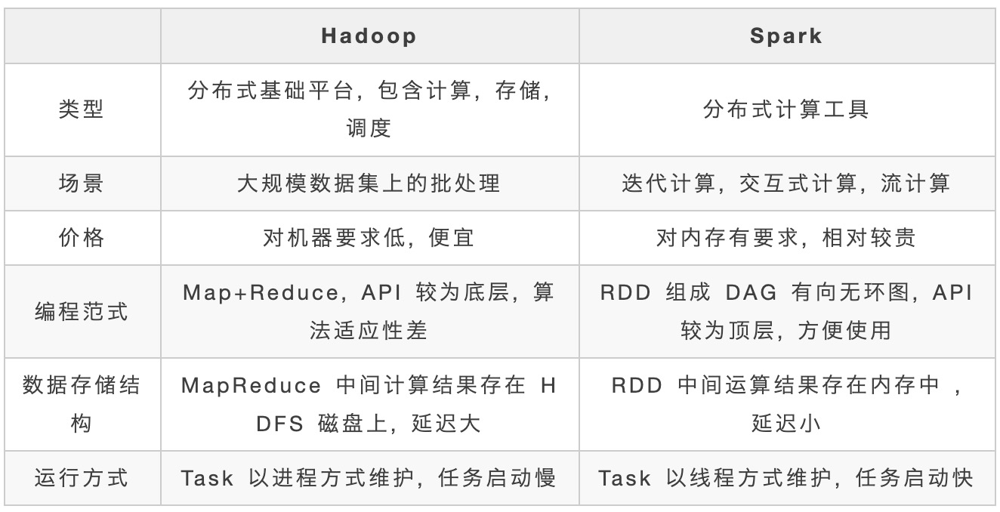
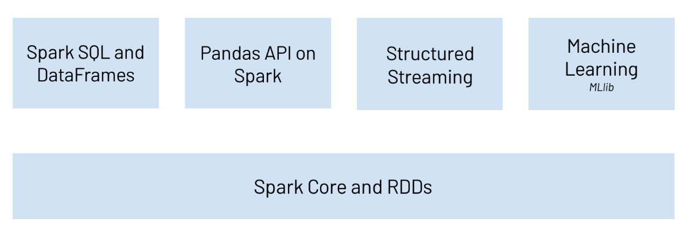
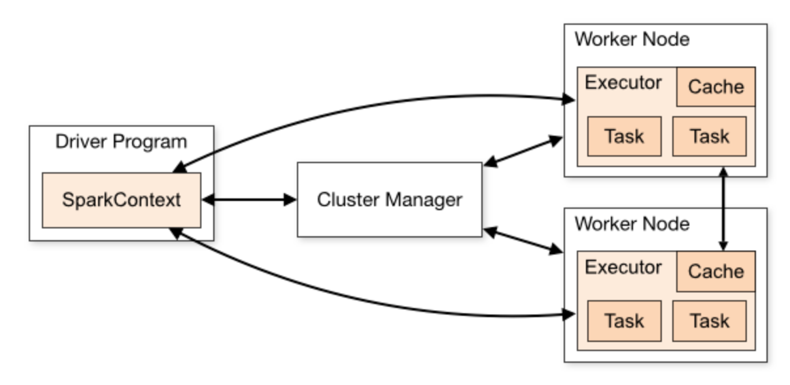
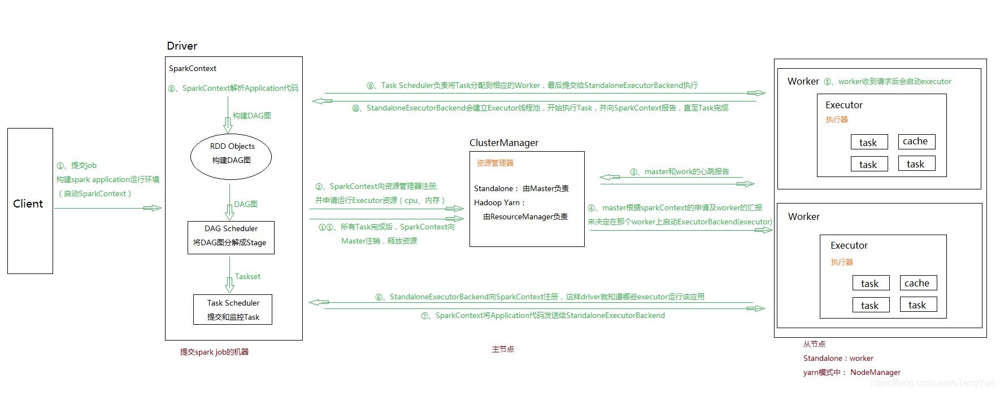
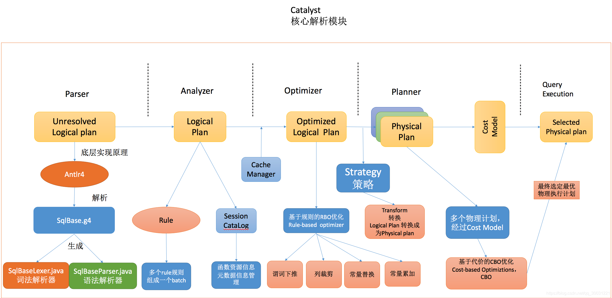

spark|基础知识
大数据、人工智能( Artificial Intelligence )正以前所未有的广度和深度影响所有的行业， 现在及未来公司的核心壁垒是数据， 核心竞争力来自基于大数据的人工智能的竞争。
Spark 是当今大数据领域最活跃、最热门、最高效的大数据通用计算平台之一，开始学习学习。
Spark 是一个快速、通用、可扩展的分布式计算系统，用于大规模数据处理和分析，提供了丰富的 API 和强大的计算能力，支持多种编程语言，能在内存中高效处理数据，广泛应用于数据挖掘、机器学习、流计算等领域。
模块组成
-
Spark Core：实现了 Spark 的基本功能，包含 RDD、任务调度、内存管理、错误恢复、与存储系统交互等模块。
-
Spark SQL：Spark 用来操作结构化数据的程序包。通过 Spark SQL，我们可以使用 SQL 操作数据。
-
Spark Streaming：Spark 提供的对实时数据进行流式计算的组件。提供了用来操作数据流的 API。
-
Spark MLlib：提供常见的机器学习(ML)功能的程序库。包括分类、回归、聚类、协同过滤等，还提供了模型评估、数据导入等额外的支持功能。
-
GraphX(图计算)：Spark 中用于图计算的 API，性能良好，拥有丰富的功能和运算符，能在海量数据上自如地运行复杂的图算法。
-
集群管理器：Spark 设计为可以高效地在一个计算节点到数千个计算节点之间伸缩计算。
-
Structured Streaming：处理结构化流,统一了离线和实时的 API。
Spark VS Hadoop？

尽管 Spark 相对于 Hadoop 而言具有较大优势，但 Spark 并不能完全替代 Hadoop，Spark 主要用于替代 Hadoop 中的 MapReduce 计算模型。存储依然可以使用 HDFS，但是中间结果可以存放在内存中；调度可以使用 Spark 内置的，也可以使用更成熟的调度系统 YARN 等。
特点
-
快:与 Hadoop 的 MapReduce 相比，Spark 基于内存的运算要快 100 倍以上，基于硬盘的运算也要快 10 倍以上。
-
易用:Spark 支持 Java、Python、R 和 Scala 的 API，还支持超过 80 种高级算法，使用户可以快速构建不同的应用。
-
通用:Spark 提供了统一的解决方案。Spark 可以用于批处理、交互式查询(Spark SQL)、实时流处理(Spark Streaming)、机器学习(Spark MLlib)和图计算(GraphX)。这些不同类型的处理都可以在同一个应用中无缝使用。
-
兼容性:Spark 可以非常方便地与其他的开源产品进行融合。比如，Spark 可以使用 Hadoop 的 YARN 和 Apache Mesos 作为它的资源管理和调度器，并且可以处理所有 Hadoop 支持的数据，包括 HDFS、HBase 和 Cassandra 等。
架构

spark 主要有以下几个组件
- Spark Core：包含Spark的基本功能；尤其是定义RDD的API、操作以及这两者上的动作。其他Spark的库都是构建在RDD和Spark Core之上的
- Spark SQL：提供通过Apache Hive的SQL变体Hive查询语言（HiveQL）与Spark进行交互的API。每个数据库表被当做一个RDD，Spark SQL查询被转换为Spark操作。
- Spark Streaming：对实时数据流进行处理和控制。Spark Streaming允许程序能够像普通RDD一样处理实时数据
- MLlib：一个常用机器学习算法库，算法被实现为对RDD的Spark操作。这个库包含可扩展的学习算法，比如分类、回归等需要对大量数据集进行迭代的操作。
- GraphX：控制图、并行图操作和计算的一组算法和工具的集合。GraphX扩展了RDD API，包含控制图、创建子图、访问路径上所有顶点的操作

上面这个图显示了spark的运行流程，从Driver到Executor再到Cluster Manager。
- Cluster Manager：在standalone模式中即为Master主节点，控制整个集群，监控worker。在YARN模式中为资源管理器
- Worker节点：从节点，负责控制计算节点，启动Executor或者Driver。
- Driver： 运行Application 的main()函数
- Executor：执行器，是为某个Application运行在worker node上的一个进程

- 通过SparkSubmit提交job后，Client就开始构建 spark context，即 application 的运行环境（使用本地的Client类的main函数来创建spark context并初始化它）
- yarn client提交任务，Driver在客户端本地运行；yarn cluster提交任务的时候，Driver是运行在集群上
- SparkContext连接到ClusterManager(Master)，向资源管理器注册并申请运行Executor的资源（内核和内存）
- Master根据SparkContext提出的申请，根据worker的心跳报告，来决定到底在那个worker上启动executor
- Worker节点收到请求后会启动executor
- executor向SparkContext注册，这样driver就知道哪些executor运行该应用
- SparkContext将Application代码发送给executor（如果是standalone模式就是StandaloneExecutorBackend）
- 同时SparkContext解析Application代码，构建DAG图，提交给DAGScheduler进行分解成stage，stage被发送到TaskScheduler。
- TaskScheduler负责将Task分配到相应的worker上，最后提交给executor执行
- executor会建立Executor线程池，开始执行Task，并向SparkContext汇报,直到所有的task执行完成
- 所有Task完成后，SparkContext向Master注销
- SparkContext关闭，Application结束
核心概念
Application: Application都是指用户编写的Spark应用程序，其中包括一个Driver功能的代码和分布在集群中多个节点上运行的Executor代码
Driver: Spark中的Driver即运行上述Application的main函数并创建SparkContext
SparkContext: 目的是为了准备Spark应用程序的运行环境，在Spark中有SparkContext负责与ClusterManager通信，进行资源申请、任务的分配和监控等，当Executor部分运行完毕后，Driver同时负责将SparkContext关闭，通常用SparkContext代表Driver
Executor: 某个Application运行在worker节点上的一个进程， 该进程负责运行某些Task， 并且负责将数据存到内存或磁盘上，每个Application都有各自独立的一批Executor， 在Spark on Yarn模式下，其进程名称为CoarseGrainedExecutor Backend。一个CoarseGrainedExecutor Backend有且仅有一个Executor对象， 负责将Task包装成taskRunner,并从线程池中抽取一个空闲线程运行Task， 这个每一个CoarseGrainedExecutor Backend能并行运行Task的数量取决与分配给它的cpu个数
Cluster Manager：指的是在集群上获取资源的外部服务。目前有三种类型
- Standalone : spark原生的资源管理，由Master负责资源的分配
- Apache Mesos:与hadoop MR兼容性良好的一种资源调度框架
- Hadoop Yarn: 主要是指Yarn中的ResourceManager
Worker: 集群中任何可以运行Application代码的节点，在Standalone模式中指的是通过slave文件配置的Worker节点，在Spark on Yarn模式下就是NoteManager节点
Task: 被送到某个Executor上的工作单元，但hadoopMR中的MapTask和ReduceTask概念一样，是运行Application的基本单位，多个Task组成一个Stage，而Task的调度和管理等是由TaskScheduler负责
Job: 包含多个Task组成的并行计算，往往由Spark Action触发生成， 一个Application中往往会产生多个Job
Stage: 每个Job会被拆分成多组Task， 作为一个TaskSet， 其名称为Stage，Stage的划分和调度是有DAGScheduler来负责的，Stage有非最终的Stage（Shuffle Map Stage）和最终的Stage（Result Stage）两种，Stage的边界就是发生shuffle的地方
DAGScheduler: 根据Job构建基于Stage的DAG(Directed Acyclic Graph有向无环图)，并提交Stage给TASkScheduler。 其划分Stage的依据是RDD之间的依赖的关系找出开销最小的调度方法
TASKScheduler: 将TaskSet提交给worker运行，每个Executor运行什么Task就是在此处分配的. TaskScheduler维护所有TaskSet，当Executor向Driver发生心跳时，TaskScheduler会根据资源剩余情况分配相应的Task。另外TaskScheduler还维护着所有Task的运行标签，重试失败的Task。
Job=多个stage，Stage=多个同种task, Task分为ShuffleMapTask和ResultTask，Dependency分为ShuffleDependency和NarrowDependency
运行模式
-
local 本地模式(单机)–学习测试使用 : 分为 local 单线程和 local-cluster 多线程。
-
standalone 独立集群模式–学习测试使用 : 典型的 Mater/slave 模式。
-
standalone-HA 高可用模式–生产环境使用 : 基于 standalone 模式，使用 zk 搭建高可用，避免 Master 是有单点故障的。
-
on yarn 集群模式–生产环境使用 : 运行在 yarn 集群之上，由 yarn 负责资源管理，Spark 负责任务调度和计算。
-
on mesos 集群模式–国内使用较少 : 运行在 mesos 资源管理器框架之上，由 mesos 负责资源管理，Spark 负责任务调度和计算。
-
on cloud 集群模式–中小公司未来会更多的使用云服务 : 比如 AWS 的 EC2，使用这个模式能很方便的访问 Amazon 的 S3。
RDD
Spark 的核心是建立在统一的抽象弹性分布式数据集（Resilient Distributed Datasets，RDD）之上的，这使得 Spark 的各个组件可以无缝地进行集成，能够在同一个应用程序中完成大数据处理。
RDD 是 Spark 提供的最重要的抽象概念，它是一种有容错机制的特殊数据集合，可以分布在集群的结点上，以函数式操作集合的方式进行各种并行操作。
通俗点来讲，可以将 RDD 理解为一个分布式对象集合，本质上是一个只读的分区记录集合。每个 RDD 可以分成多个分区，每个分区就是一个数据集片段。一个 RDD 的不同分区可以保存到集群中的不同结点上，从而可以在集群中的不同结点上进行并行计算。
RDD 的操作分为转化（Transformation）操作和行动（Action）操作。转化操作就是从一个 RDD 产生一个新的 RDD，而行动操作就是进行实际的计算。
RDD 的操作是惰性的，当 RDD 执行转化操作的时候，实际计算并没有被执行，只有当 RDD 执行行动操作时才会促发计算任务提交，从而执行相应的计算操作。
参考官网的算子列表，可以发现转化操作和行动操作的算子非常多。
Spark SQL和DataFrame
一句话理解：DataFrame是RDD+Schema。DataFrame是从Spark 1.3版本开始引入的。
DataFrame和RDD有一些共同点，也是不可变的分布式数据集。但与RDD不一样的是，DataFrame是有schema的，有点类似于关系型数据库中的表，每一行的数据都是一样的，因为。有了schema，这也表明了DataFrame是比RDD提供更高层次的抽象。通过DataFrame可以简化Spark程序的开发，让Spark处理结构化数据变得更简单。DataFrame可以使用SQL的方式来处理数据。
DataFrame支持各种数据格式的读取和写入，例如：CSV、JSON、AVRO、HDFS、Hive表。
DataFrame底层使用Catalyst进行优化。
Spark SQL是一个用于结构化数据处理的Spark模块，与基本的Spark RDD的API不同，Spark SQL的接口还提供了更多关于数据和计算的结构化信息。Spark SQL可以用于执行SQL查询并从Hive表中读取数据。
Spark SQL 的核心是一个叫做 Catalyst 的查询编译器，它将用户程序中的 SQL/DataFrame/Dataset 经过一系列的操作，最终转化为 Spark 系统中执行的 RDD。

-
Parser: 将sql语句利用Antlr4进行词法和语法的解析
-
Analyzer：主要利用 Catalog 信息将 Unresolved Logical Plan 解析成 Analyzed logical plan；
-
Optimizer：利用一些 Rule （规则）将 Analyzed logical plan 解析成 Optimized Logical Plan；
-
Planner：前面的 logical plan 不能被 Spark 执行，而这个过程是把 logical plan 转换成多个 physical plans，然后利用代价模型（cost model）选择最佳的 physical plan；
-
Code Generation：这个过程会把 SQL 查询生成 Java 字 节码。